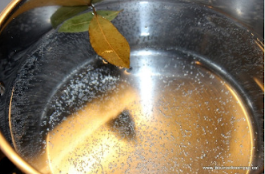
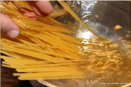
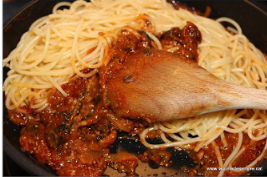
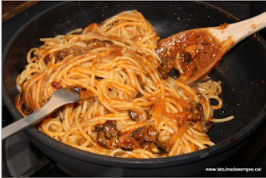
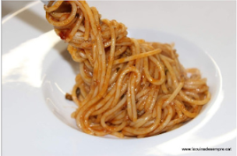

Avui us presentem un plat de pasta contundent, explosiu i amb caràcter. La salsa siciliana és una salsa elaborada amb una salsa de tomàquet com a base i amb puré d'anxoves i una picada d'olives, que habitualment conté bitxo.
Picant i les anxoves, fan d'aquest plat italià, un entrant molt particular i amb molta personalitat.
És d'aquells plats que t'encanten o els odies. No cal dir que podeu suavitzar la salsa reduint la quantiat d'anxoves i evitant el picant, que també resulta molt bona.
Poseu a escalfar abundant aigua amb sal i dues fulles de llorer.
Quan arrenqui el bull, tireu-hi els espaguetis.
Afegiu la pasta a la salsa.
Remeneu d'abaix cap a dalt, amb compte de no malmetre la pasta en excés.
I de seguida, serviu-ho al plat.
Tireu el formatge per sobre, un últim raig d'oli d'oliva en cru i ho decoreu amb una fulla d'alfàbrega. I a gaudir!